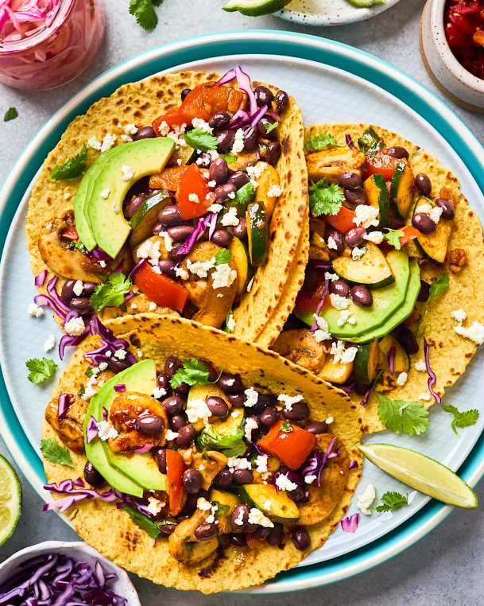
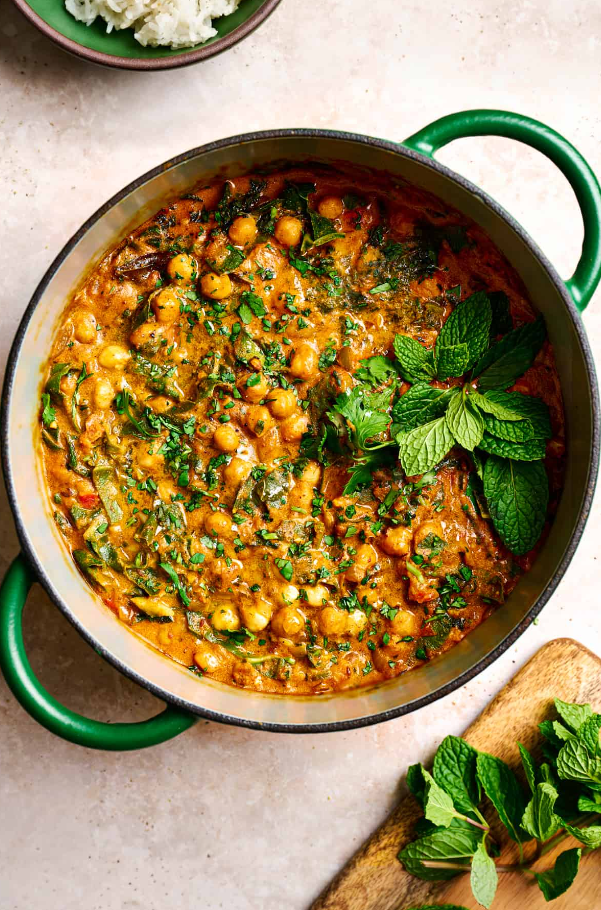
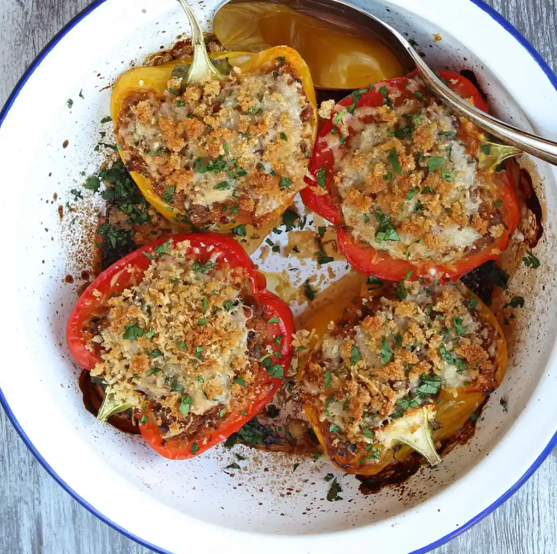
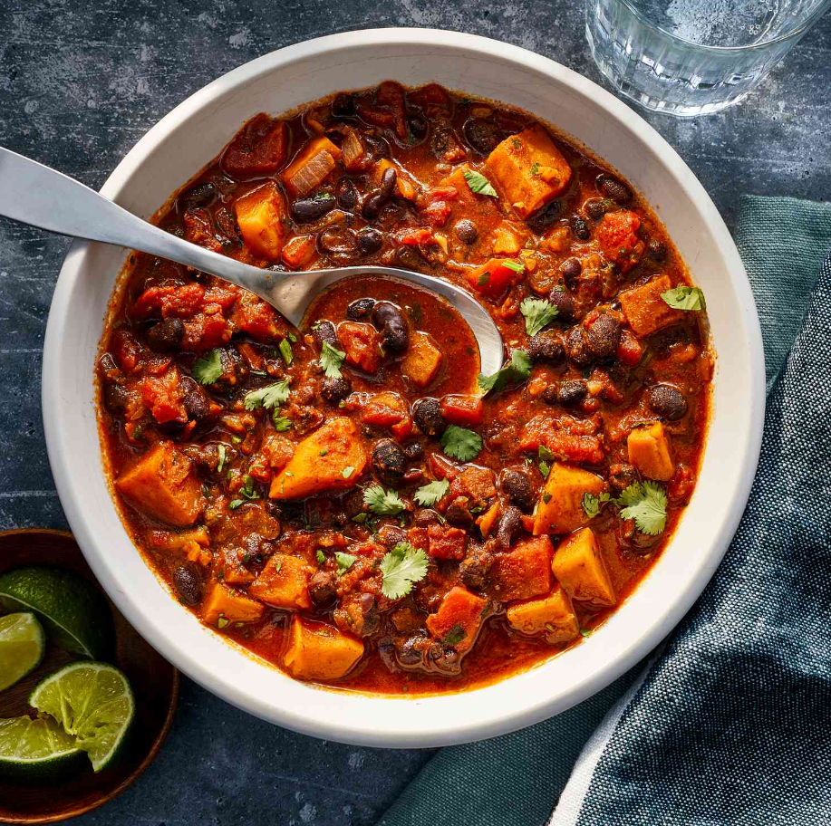

zero meat
vegetarian food
our weekly vegan selection

Vegan Caesar Salad
Crisp romaine, crunchy croutons, and creamy dairy-free dressing
- 15 minutes
- ★★★★✰
Lentil Bolognese
Hearty lentils simmered in a rich tomato sauce, served over pasta.
- 40 minutes
- ★★★★★
Vegan Frittata
A savory, protein-rich dish made with tofu or chickpea flour, spiced with turmeric and nutritional yeast, and loaded with veggies like spinach, peppers, and mushrooms. Perfect for any meal!
- 30 minutes
- ★★★★☆
most frequently visited recipes

Vegan Buddha Bowl
A colorful medley of quinoa, roasted veggies, avocado, and tahini drizzle.
- 30 minutes
- ★★★★★

Chickpea Curry
Creamy, spiced chickpeas simmered in coconut milk and tomato.
- 25-30 minutes
- ★★★★✰

Stuffed Bell Peppers
Peppers filled with lentils, rice, and herbs, baked to perfection.
- 45-50 minutes
- ★★★★★
Vegan Tacos
Corn tortillas packed with spicy jackfruit, guacamole, and salsa.
- 20-25 minutes
- ★★★★★

Sweet Potato Chili
A hearty mix of sweet potatoes, black beans, and smoky spices.
- 40-45 minutes
- ★★★★✰

Mushroom Stroganoff
Savory mushrooms in a creamy cashew sauce over pasta.
- 25-30 minutes
- ★★★★✰